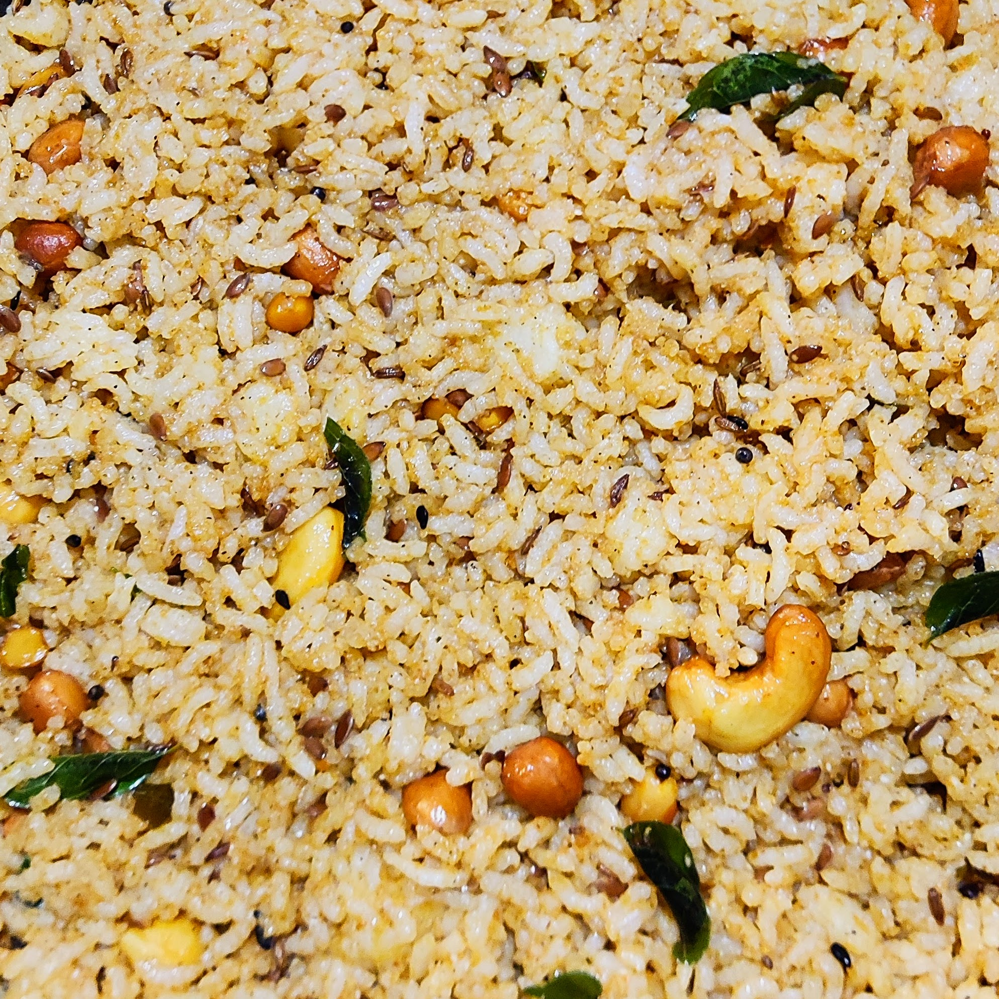

Pulioggare

Description
A typical South Indian dish, this is also called Tamarind rice.
A simple delicacy made of tamrind and masala mixed with rice! Can be made crunchy with peanuts.
It is usually eatten with a side of curd! Add suger to the curd and pair it up to really contrast the flavours!
Ingrediants
- Pulioggare Gojju
- Cooked rice
Preperation Steps
- Take the fresh steamed cooked rice in a big pan.
- Add a little bit of oil to the rice.
- Add a little bit of Pulioggare Gojju and mix it with rice by hand. It will be sticky at first but continue mixing by hand. You can apply a bit of oil to your hand so it doesn't stick to you while mixing.
- Add a bit more if needed and mix.
- You Pulioggare is ready! Serve it with a side of sweetened curd.